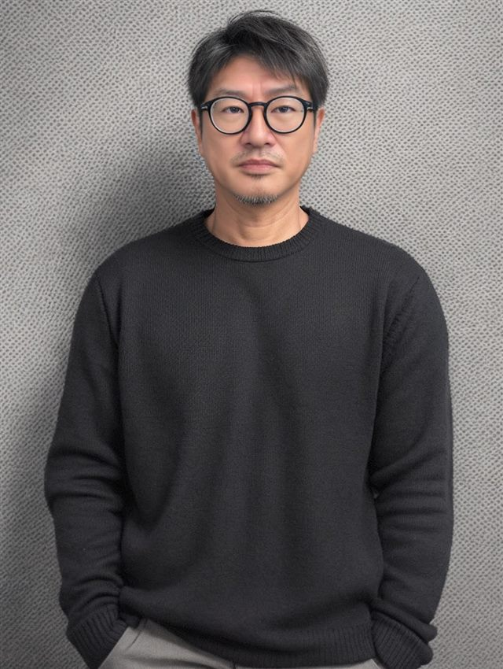
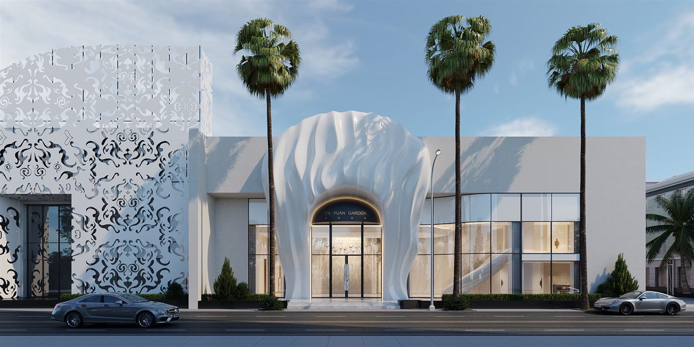
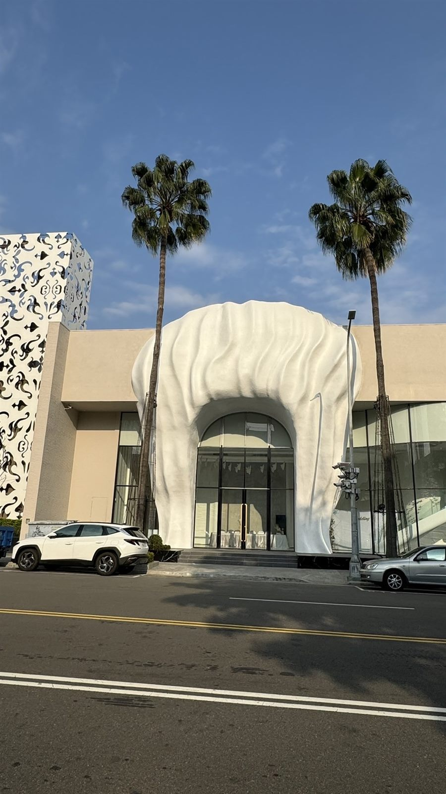

建築設計與工法整合
從空間、構件到組裝關係，關注分件、固定方式、安裝順序及交界收頭，讓設計討論具備施工視角。
ARCHITECTURE / DIGITAL CRAFT
建築設計整合顧問
以 30 年 3D / BIM 實務為基礎，串聯設計思考、數位模型與工法整合，讓建築構想走向可理解、可協作的實踐。
觀看精選作品
ABOUT
我是林明凱，建築設計整合顧問。1992 年畢業於新竹明新工專土木科，1994 年投入 3D 領域，工作橫跨建築視覺、BIM 整合、空間設計與 VR / AR。
「Digital、Design、Draw」是我對 3Design 的理解：把數位工具、設計思考與視覺表達連成工作方法。累積超過 20 年數位設計應用教學經驗，也將實務經驗帶入課程與工程協作。
EXPERIENCE & TEACHING
教學經歷涵蓋資策會、恆毅機構、華夏技術學院與 TXI AVRschool，曾擔任 Autodesk 種子教師，並參與西基動畫學院成立規劃。
以下經歷整理自 2024 年 11 月個人簡介，保留當時記載的年份。
從 3D 視覺與動畫出發，逐步延伸至建築及工程應用。
開設 AutoCAD 與 3ds Max 數位建築視覺課程。
開設 AutoCAD、3ds Max 與 Revit 整合課程。
開設專業就業動畫訓練班，並參與西基動畫學院成立規劃。
開設 Blender、Unreal Engine AR / VR 課程，於 TXI AVRschool 教授 Blender、Unreal Engine 與 Meshroom。
開始擔任騰煇企業數位顧問，探索 AIGC 設計與 BIM、視覺整合、VR / AR 的工程應用。
EXPERTISE
以建築為核心，將視覺表達、模型資訊與施工介面放在同一個脈絡中思考。
從空間、構件到組裝關係，關注分件、固定方式、安裝順序及交界收頭，讓設計討論具備施工視角。
以 IFC 串聯模型與資訊，結合 Blender Bonsai 的開放 BIM 工作方式，關注構件、屬性與跨工具協作。
探索 AIGC 對設計發想與工作流程的支援，並以 Web3D 思考模型的互動瀏覽與溝通方式。
FEATURED PROJECT / 2024
TAICHUNG, TAIWAN
AIGC · 建築視覺 · 工法整合

IDEA INTO FORM
入口的流動曲面，與立面的鏤空紋理，呈現數位造型與建築尺度的對話。
雅園會館是 2024 年個人簡介所載的 AIGC 工程應用案例。從視覺提案、曲面分件到實體呈現，結合騰煇企業團隊的造型與數位整合工作。
案例圖文取自 2024 年個人簡介。專案詳細分工依原始資料為準。

SELECTED WORK
簡報展示 Unreal Engine、Twinmotion、Revit 與 Blender 的整合應用。
以即時視覺工具呈現設計提案，串聯 Revit、Blender 與 Unreal Engine / Twinmotion。
以 3D 數位設計進行遊艇專案表達。
結合 Revit、3ds Max 與 V-Ray 進行設計視覺表達。
案例名稱、年份與工具依 2024 年簡報整理；提案及視覺表現項目不等同建築設計委任或完工承攬。
APPROACH
工具的價值，在於幫助看清問題、形成共識，並支持下一個可執行的決策。
確認設計目標、來源資料與需要解決的介面。
透過 3D、BIM 與 IFC 建立共同討論基礎。
核對構件關係、施工順序與交界條件。
以圖面、模型及 Web3D 支援理解與協作。
持續探索 AIGC 輔助發想、Blender Bonsai 模型作業，以及 IFC 與 Web3D 之間的資訊連結。這些方向以支援建築整合與溝通為目的。
KEEP CONNECTING
林明凱 Ming-Kai Lin · 建築設計整合顧問
瀏覽 GitHub · vizken